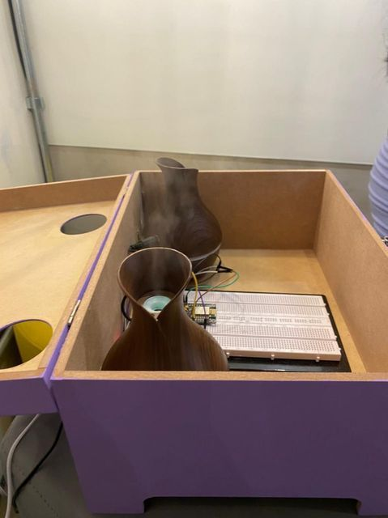

Python
C#
C++
Power Bi
Olá, meu nome é Caio tenho 19 anos e sou um entusiasta tecnológico fascinado por computação, jogos e artigos. Desde novo sempre fui curioso para saber como realmente o computador funcionava e isso acabou despertando minha vocação para que eu pudesse estudar a fundo esse meio tecnológico, quando comecei a cursar o 2º ano do ensino médio iniciei um curso profissionalizante o qual eu tive contato com o mundo de trabalho e a tecnologia de fato nas empresas, após concluir o ensino médio busquei por uma formação na área e foi daí que iniciei minha primeira Graduação em Análise e Desenvolvimento de Sistemas na FECAP onde venho formando uma base sólida de conhecimentos voltados para área de desenvolvimento de softwares e sigo aplicando esses conhecimentos no meu ambiente de trabalho onde tenho a liberdade de trabalhar com as seguintes linguagens de programação Python e VBScript nas quais eu consigo manipular dados, planilhas para a elaboração de relatórios indicadores automatizados por meio da tecnologia POWER BI.
O Umidificador Automatizado foi desenvolvido como parte de um projeto interdisciplinar universitário o qual tem o objetivo de fazer o uso de todas matérias aprendidas durante o semestre, visando a colaboração da equipe durante o trabalho e o desenvolvimento da aplicação utilizando as seguintes tecnologias :
Programação em C/C++, Circuitos Elétricos, Protocolos HTTP E Uso do ESP8266
A principal do projeto foi automatizar um método de terapia chamado Aromaterapia que é uma terapia feita com aromas que estimulam o cérebro a sensações, porém optamos por fazer um método automatizado no qual o ARDU("ESP826") controlaria o tempo no qual as cargas de aromas seriam dispensadas por um umidificador simples e manual, sendo assim com "relógio" programado para soltar diversas cargas durante o dia sem que necessite do usuário se locomover até o umidificador ou precisar ligar manualmente o mesmo. Com nossa ideia o usuário é capaz de fazer o acionamento do umidificador a distância por exemplo: caso o mesmo queria preparar o ambiente para descanso enquanto ele ainda não está em casa.
Para entrar em contato comigo utilize uma das plataformas abaixo.